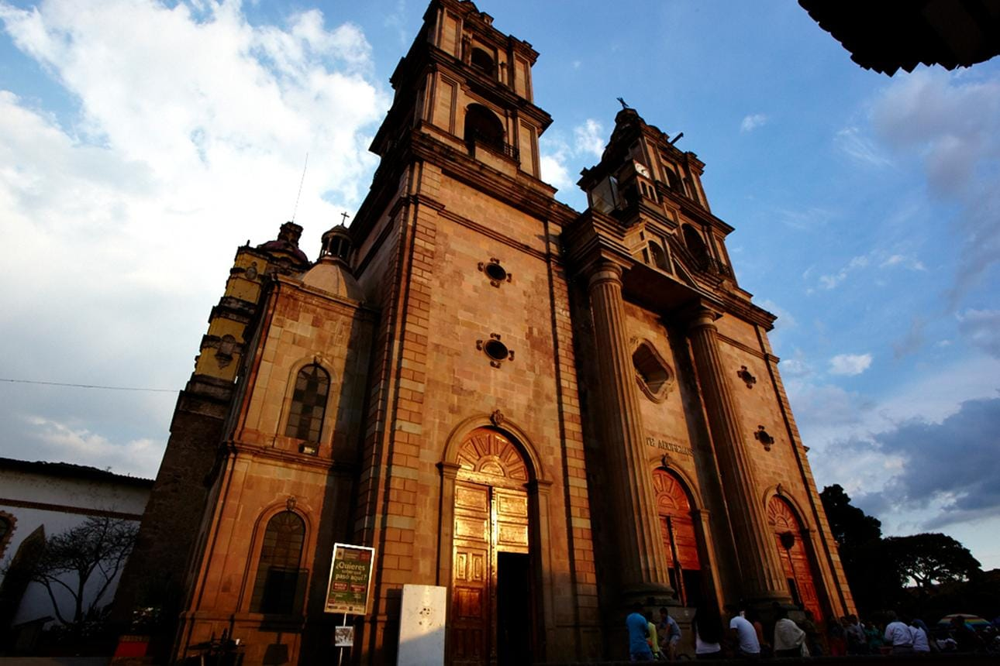
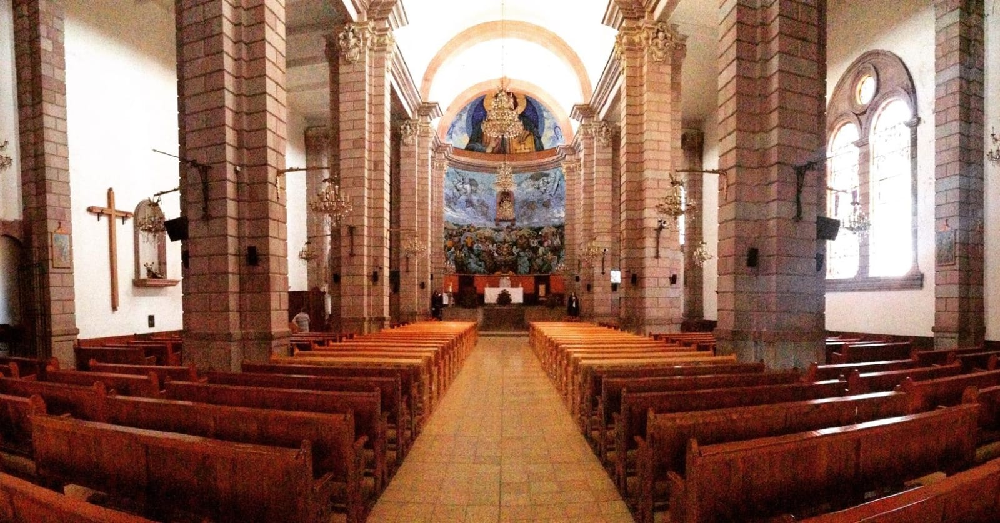
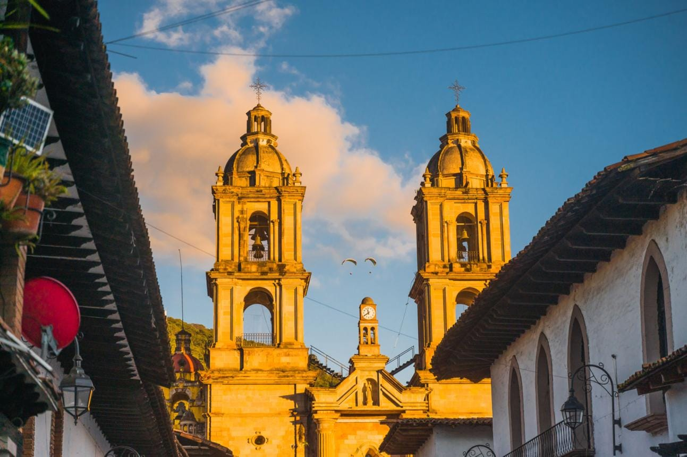

" Fe, historia y tradicion en el centro. "

La Parroquia de San Francisco de Asís es uno de los monumentos históricos y religiosos más importantes de Valle de Bravo, Estado de México. Sus orígenes se remontan al siglo XVI y está dedicada a San Francisco de Asís, santo patrono del municipio. Es un lugar que representa la historia, la fe y las tradiciones de la comunidad.
Su arquitectura destaca por sus grandes dimensiones, campanarios, columnas y detalles ornamentales. A lo largo del tiempo, el templo ha tenido modificaciones y ampliaciones que forman parte de su historia. Su construcción refleja la influencia religiosa y arquitectónica que tuvo la época colonial en el desarrollo de Valle de Bravo.
En el interior de la parroquia se encuentra un espacio dedicado a las celebraciones religiosas, donde destacan sus elementos decorativos y artísticos. Es un lugar al que acuden habitantes y visitantes para participar en misas, ceremonias y otras actividades relacionadas con la fe católica.
La parroquia tiene una gran importancia cultural para el municipio, ya que forma parte de su identidad histórica. Su ubicación en el centro permite que sea uno de los sitios más reconocidos por quienes recorren las calles tradicionales de Valle de Bravo y conocen su patrimonio arquitectónico.
Cada 4 de octubre se celebra la festividad en honor a San Francisco de Asís. Durante esta fecha se realizan actividades religiosas, procesiones, música y celebraciones tradicionales. Esta fiesta reúne a numerosas familias y visitantes que participan en una de las tradiciones más importantes de la localidad.
Actualmente, la Parroquia de San Francisco de Asís continúa siendo un símbolo representativo de Valle de Bravo. Su valor no solamente se encuentra en su arquitectura, sino también en su significado religioso, histórico y social, convirtiéndose en un lugar importante para conocer las raíces y costumbres de este Pueblo Mágico.


Uno de los elementos más interesantes de la parroquia es su torre, ya que conserva una parte de la construcción antigua que recuerda los primeros años de la presencia franciscana en Valle de Bravo. Este detalle permite apreciar cómo el templo ha cambiado con el paso del tiempo, conservando elementos de distintas etapas de su historia.
En el interior del templo destacan sus bóvedas de medio cañón y sus vitrales, los cuales representan escenas relacionadas con la vida de San Francisco de Asís. También sobresale una antigua pila bautismal del siglo XVII, decorada con el cordón franciscano de trece nudos, un elemento que tiene un significado religioso dentro de la tradición franciscana.
La parroquia también es importante por su relación con el desarrollo histórico y cultural de Valle de Bravo. A lo largo de los años, sus instalaciones han recibido modificaciones y ampliaciones, en las que participaron habitantes de la comunidad. Gracias a ello, el templo se ha convertido en un símbolo de identidad para la población y en uno de los lugares más reconocidos del centro histórico.